Web 会话页，用户消息气泡的下方。回合进行中发出的消息（steer）现在有两行小字；改后并成一行，⧉ 放在最前面（你 10-27 说的）。
已定（10-27）：A，红色那行也并，按推荐落地。
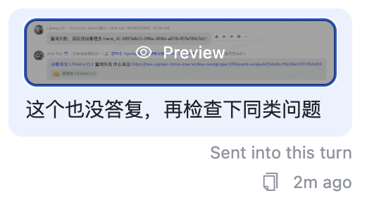
你的截图：网页端，鼠标停在图片上，所以 ② 也出来了。文案是 10-16 之前的版本。
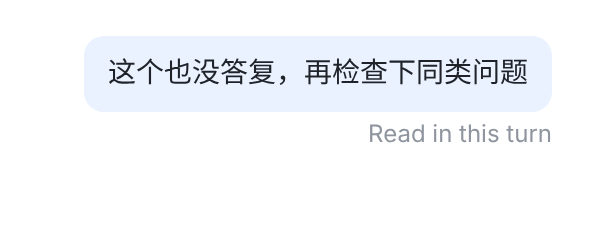
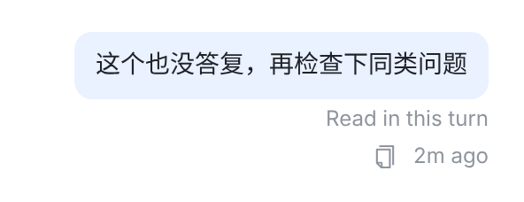
① 状态一直在；② ⧉ 和时间只在悬停时出现，但不悬停时那一行也空着。
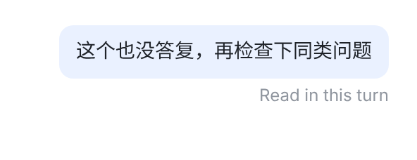
不悬停：和现在一样，只有状态，位置不变（低了 0.6px，看不出来）。悬停：⧉ 和时间在状态左边淡入，同一行；状态不动，什么都不挪。气泡下少了一行，下一条消息往上提 20px。
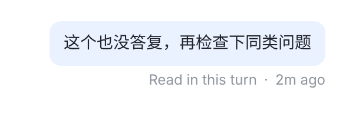
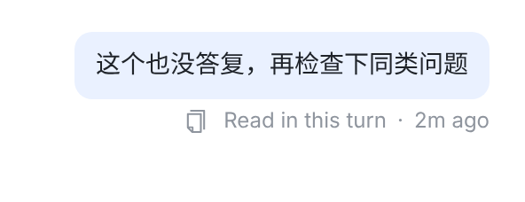
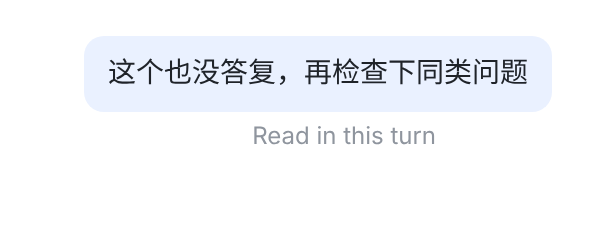
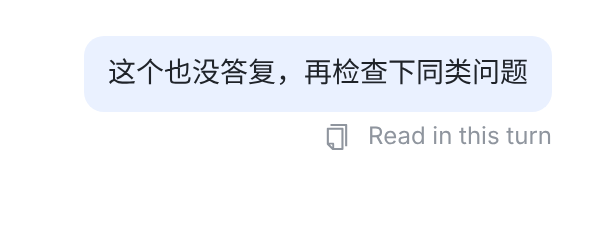
B：时间放在状态后面。时间要是也只在悬停时出现，不悬停时右边就空出一截，状态离开了气泡的右边缘（第三张）；要对齐，只能让 steer 的时间一直显示（前两张），这就和别的消息「时间只在悬停时出现」不一样了。
C：不显示时间。iOS/macOS 现在就是这样。网页上 steer 就看不到发送时间了；不悬停时和 A 一样。
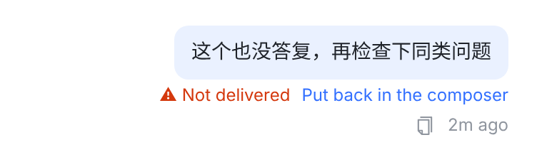
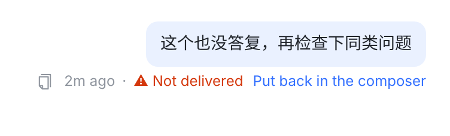
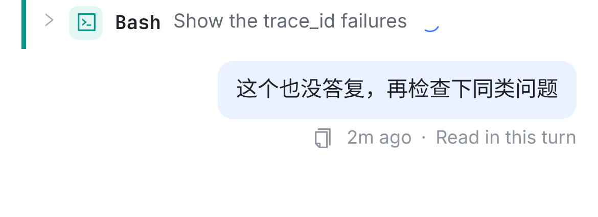
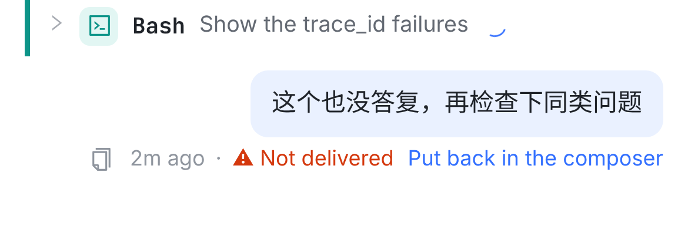
| 消息 | 不悬停 | 悬停 |
|---|---|---|
| 普通消息 | （空） | ⧉ 2m ago — 不变 |
| 回合中发的，已读 | Read in this turn | ⧉ 2m ago · Read in this turn |
| 没送达 | ⚠ Not delivered Put back in the composer | ⧉ 2m ago · ⚠ Not delivered Put back… |
| 没法确认已读 | ⚠ Couldn't confirm it was read | ⧉ 2m ago · ⚠ Couldn't confirm it was read |
| 只有图片，没有文字 | 状态（有的话） | 同左 — 没有文字可复制，和现在一样不出 ⧉ 和时间 |
src/web/src/components/Transcript.tsx — UserBubble：状态（steer 的进度 / 没送达）挪进 .chat-user-meta，排在 ⧉ 和时间后面，中间一个「·」。src/web/src/index.css — .chat-user-meta：「悬停才出现」从整行挪到 ⧉ / 时间 / 「·」三样上；状态在行里去掉上边距。src/web/src/lib/sessionExport.tsx — 导出时时间和「·」照常显示。Transcript.test.tsx 里现有的计数不受影响；加一条：这一行里的顺序是 ⧉、时间、「·」、状态。每张截图都是真实页面：main 546c57383 的 Web 代码（① 现在），以及同一份代码加上改动（A）；B、C 是在 A 上加一段 CSS 调顺序或隐藏时间。Chromium，桌面 1280 宽 2x，手机 390 宽 3x；字体用 Inter 代替 SF、Noto Sans SC 代替苹方。虚线框和标签是后画的。